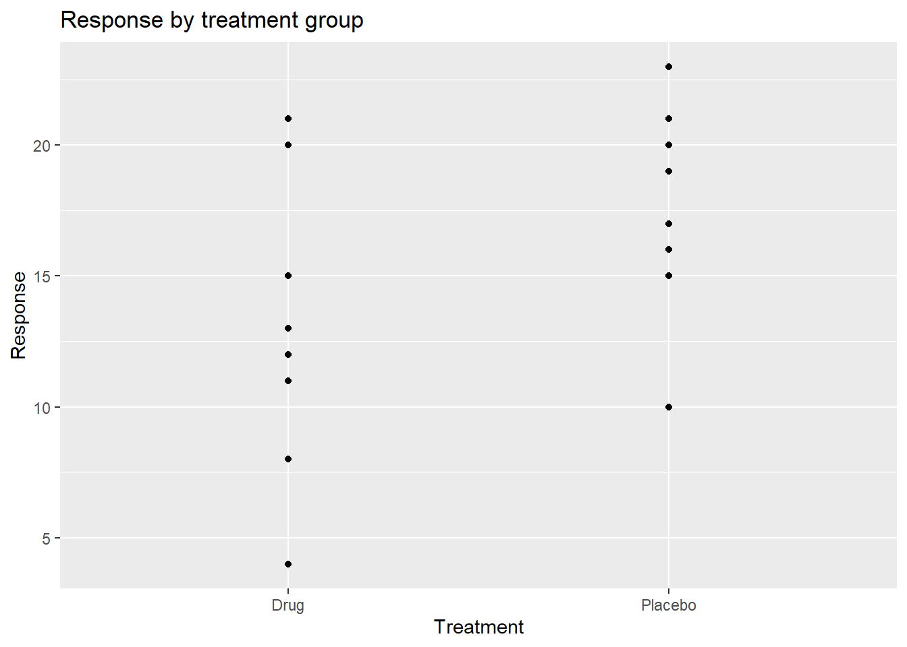
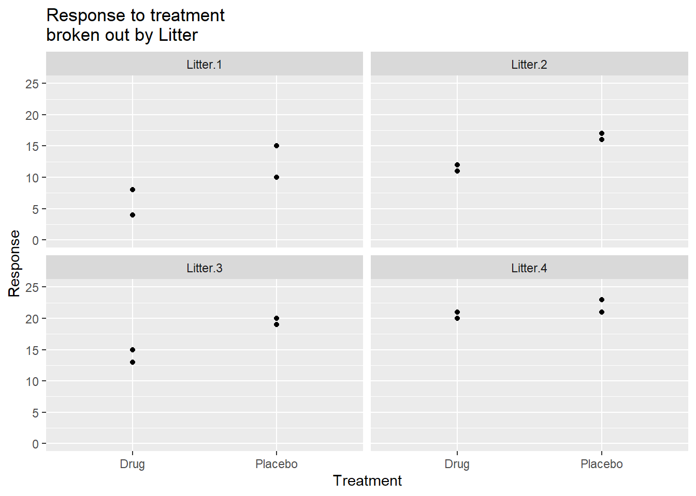
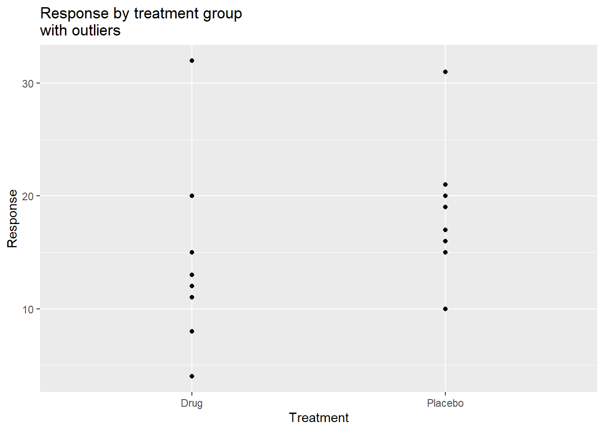
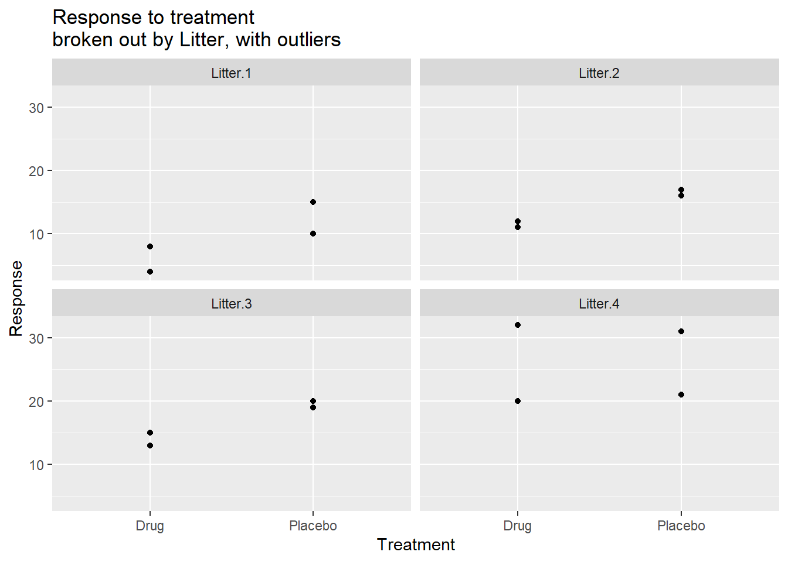

# install.packages("RobStatTM")4 If you have normally distributed data with outliers: Robust tests
If your data are approximately normally distributed, but you have a few extreme outliers, the outliers can cause much worse p-values and cause large errors in the estimated effect of the explanatory variables. In this chapter we examine robust methods, which reduce the influence of extreme outliers.
Install the RobStatTM package if you haven’t already done so.
Load the library, using the command library(RobStatTM).
library(RobStatTM)Load the ggplot library.
library(ggplot2)4.1 Robust methods: Reduce the influence of extreme observations
Robust methods are designed to give good power when most of the observations in a data set are from a normal distribution with a particular mean and standard deviation, while a small portion of the observations are from a different distribution. The different distribution will likely have a different mean and standard deviation and might not be normal. This small portion of the observations from the different distribution are often identified as outliers.
The essential idea of robust methods is to down weight the outliers so that they have less effect on the statistical model and tests. If there are no outliers, the robust tests give results very similar to a classical t-test, analysis of variance, or linear regression. If there are outliers, the robust test will usually give better p-values than the classical tests, by giving most weight to the majority of observations.
Robust methods are available in R, JMP, SAS, Stata, S-plus and other software. The R package RobStatTM presented here accompanies the textbook “Robust Statistics Theory and Methods (with R)” by Ricardo Maronna et al. (Maronna et al. 2018). It includes recent research advances not included in other software.
Example with one explanatory variable: Robust alternative to t-tests
Let’s start with an example where we use a t-test for the question, do colon cancer patients have elevated levels of the mucin protein in their blood? In this synthetic data, we have the level of the protein mucin in two groups: (1) patients with colon cancer and (2) healthy controls. The two-sample t-test is commonly used for such data.
Here is R code with the data and a graph.
cancer=c(83, 89, 90, 93, 98)
controls=c(99, 100, 103, 104, 141)
Mucin=c(cancer,controls)
Diagnosis=c(rep("Cancer",5), rep("Controls",5))
colon.data=data.frame(Diagnosis, Mucin)
colon.data Diagnosis Mucin
1 Cancer 83
2 Cancer 89
3 Cancer 90
4 Cancer 93
5 Cancer 98
6 Controls 99
7 Controls 100
8 Controls 103
9 Controls 104
10 Controls 141with(colon.data, boxplot(Mucin ~ Diagnosis, ylab="Mucin", ylim=c(50,150)))
The boxplot and data show that there is complete separation between the two groups. In fact, all the cancer subjects have lower mucin values (98 or less) than any of the controls (99 or greater). But notice the large outlier in the control group, where one subject has a mucin value of 141.
Here are the means and medians of the two groups. Notice that the mean of the control group, 109.4, is larger than the median, 103. This difference is due to the outlier.
aggregate(Mucin ~ Diagnosis, colon.data, mean) Diagnosis Mucin
1 Cancer 90.6
2 Controls 109.4aggregate(Mucin ~ Diagnosis, colon.data, median) Diagnosis Mucin
1 Cancer 90
2 Controls 103Here is the ordinary two-sample t-test, using the R function t.test.
with(colon.data, t.test(Mucin ~ Diagnosis, var.equal=TRUE))
Two Sample t-test
data: Mucin by Diagnosis
t = -2.258, df = 8, p-value = 0.05389
alternative hypothesis: true difference in means between group Cancer and group Controls is not equal to 0
95 percent confidence interval:
-37.9994752 0.3994752
sample estimates:
mean in group Cancer mean in group Controls
90.6 109.4 The boxplot and the data show that there is complete separation of the two groups, but the p-value for the t-test is not significant (p = 0.05389). The reason that the t-test is not significant is the large outlier. The outlier increases the standard deviation, which increases the standard error, which gives the non-significant p-value.
The output from the t-test includes the means of the two groups (90.6 and 109.4), and the 95% confidence interval for difference between the means of the two groups (-37.99 to 0.399). Because the 95% confidence interval includes 0, we get p > 0.05.
Perform the analysis using the function lmrobM from the RobStatTM package.
summary(with(colon.data, lmrobM(Mucin ~ Diagnosis)))
Call:
lmrobM(formula = Mucin ~ Diagnosis)
Residuals:
Min 1Q Median 3Q Max
-7.6069 -1.5801 0.4466 2.4733 39.5000
Coefficients:
Estimate Std. Error t value Pr(>|t|)
(Intercept) 90.607 1.999 45.336 6.19e-11 ***
DiagnosisControls 10.893 2.993 3.639 0.0066 **
---
Signif. codes: 0 '***' 0.001 '**' 0.01 '*' 0.05 '.' 0.1 ' ' 1
Robust residual standard error: 4.984
Multiple R-squared: 0.4481, Adjusted R-squared: 0.3792
Convergence in 5 IRWLS iterationsThe lmrobM robust test gives a p-value of 0.0066. In contrast to the non-significant t-test, the outlier had little effect on the robust test.
Example robust analysis of a data set with two explanatory variables
Now let’s look at an example that illustrates robust analysis of a data set with two explanatory variables. I’ll start with a dataset that has no outliers. I’ll then modify the data set to have outliers. I’ll show the analysis with and without outliers for an ordinary ANOVA and for the robust analysis.
We have the following (synthetic) data for an experiment with mice, where treatment was either drug or placebo, and there were 4 mice from each litter. Within each litter, 2 mice were randomly assigned to drug and 2 were randomly assigned to placebo.
anova.2way.data = tibble::tribble(
~Treatment, ~Litter, ~Response,
"Drug", "Litter.1", 4,
"Drug", "Litter.1", 8,
"Drug", "Litter.2", 11,
"Drug", "Litter.2", 12,
"Drug", "Litter.3", 13,
"Drug", "Litter.3", 15,
"Drug", "Litter.4", 20,
"Drug", "Litter.4", 21,
"Placebo", "Litter.1", 10,
"Placebo", "Litter.1", 15,
"Placebo", "Litter.2", 16,
"Placebo", "Litter.2", 17,
"Placebo", "Litter.3", 19,
"Placebo", "Litter.3", 20,
"Placebo", "Litter.4", 21,
"Placebo", "Litter.4", 23)Here is a graph of the response by treatment group.
ggplot(anova.2way.data,
aes(y=Response, x=Treatment)) +
geom_point() + ggtitle("Response by treatment group")
Here is the t-test for response versus treatment group.
t.test(Response ~ Treatment, var.equal=TRUE, data = anova.2way.data)
Two Sample t-test
data: Response by Treatment
t = -1.8664, df = 14, p-value = 0.08307
alternative hypothesis: true difference in means between group Drug and group Placebo is not equal to 0
95 percent confidence interval:
-9.9398424 0.6898424
sample estimates:
mean in group Drug mean in group Placebo
13.000 17.625 The t-test is not significant, with p = 0.083. We would conclude that the drug has no significant effect. The t-test analysis can also be done using the R function lm(), which performs a linear regression.
summary(lm (Response ~ Treatment, data = anova.2way.data))
Call:
lm(formula = Response ~ Treatment, data = anova.2way.data)
Residuals:
Min 1Q Median 3Q Max
-9.0000 -2.1563 -0.3125 2.6250 8.0000
Coefficients:
Estimate Std. Error t value Pr(>|t|)
(Intercept) 13.000 1.752 7.419 3.26e-06 ***
TreatmentPlacebo 4.625 2.478 1.866 0.0831 .
---
Signif. codes: 0 '***' 0.001 '**' 0.01 '*' 0.05 '.' 0.1 ' ' 1
Residual standard error: 4.956 on 14 degrees of freedom
Multiple R-squared: 0.1992, Adjusted R-squared: 0.142
F-statistic: 3.483 on 1 and 14 DF, p-value: 0.08307The linear regression gives the same result as the t-test (as it should) with p = 0.083.
However, the researcher thought that mice from different litters might have different responses. Mice from a litter with few kits tend to be larger, while mice from a litter with many kits tend to be smaller. This might affect their response to the drug. Here is a plot of response versus treatment, broken out by litter.
ggplot(anova.2way.data, aes(y=Response, x=Treatment)) + geom_point() +
facet_wrap(~Litter) +
ggtitle("Response to treatment \nbroken out by Litter") + ylim(0,25)
The graph suggests that there is some difference among the 4 litters. Litter 1 has low values for both drug and placebo, while litter 4 has high values for both.
Run a two-way ANOVA including both treatment and litter as explanatory variables.
lm.2way = lm(Response ~ Litter + Treatment, data= anova.2way.data)
anova(lm.2way)Analysis of Variance Table
Response: Response
Df Sum Sq Mean Sq F value Pr(>F)
Litter 3 303.187 101.062 27.323 2.135e-05 ***
Treatment 1 85.562 85.562 23.132 0.0005449 ***
Residuals 11 40.688 3.699
---
Signif. codes: 0 '***' 0.001 '**' 0.01 '*' 0.05 '.' 0.1 ' ' 1The two-way ANOVA shows that both litter (p = 0.000021) and treatment (p = 0.00054) have a significant effect on the response. Analyses that included only treatment as the explanatory variable would lead to the wrong conclusions. What if, in addition, there were outliers in the data?
Here is the modified data set that has outliers. I’ve changed the highest values in litter 4 to be 32 for the mouse receiving drug and 31 for the mouse receiving placebo. These are rows 8 and 16 in the table below.
anova.2way.data.outlier = tibble::tribble(
~Treatment, ~Litter, ~Response,
"Drug", "Litter.1", 4,
"Drug", "Litter.1", 8,
"Drug", "Litter.2", 11,
"Drug", "Litter.2", 12,
"Drug", "Litter.3", 13,
"Drug", "Litter.3", 15,
"Drug", "Litter.4", 20,
"Drug", "Litter.4", 32,
"Placebo", "Litter.1", 10,
"Placebo", "Litter.1", 15,
"Placebo", "Litter.2", 16,
"Placebo", "Litter.2", 17,
"Placebo", "Litter.3", 19,
"Placebo", "Litter.3", 20,
"Placebo", "Litter.4", 21,
"Placebo", "Litter.4", 31)Here is the graph of response by treatment group for the data with outliers.
ggplot(anova.2way.data.outlier, aes(y=Response, x=Treatment)) + geom_point() +
ggtitle("Response by treatment group \nwith outliers")
Here is the t-test for the data with the outliers, run first using the t.test function and then using the lm function.
t.test(Response ~ Treatment, var.equal=TRUE, data = anova.2way.data.outlier)
Two Sample t-test
data: Response by Treatment
t = -1.1478, df = 14, p-value = 0.2703
alternative hypothesis: true difference in means between group Drug and group Placebo is not equal to 0
95 percent confidence interval:
-12.191454 3.691454
sample estimates:
mean in group Drug mean in group Placebo
14.375 18.625 summary(lm (Response ~ Treatment, data = anova.2way.data.outlier))
Call:
lm(formula = Response ~ Treatment, data = anova.2way.data.outlier)
Residuals:
Min 1Q Median 3Q Max
-10.375 -3.438 -1.500 1.625 17.625
Coefficients:
Estimate Std. Error t value Pr(>|t|)
(Intercept) 14.375 2.618 5.490 7.96e-05 ***
TreatmentPlacebo 4.250 3.703 1.148 0.27
---
Signif. codes: 0 '***' 0.001 '**' 0.01 '*' 0.05 '.' 0.1 ' ' 1
Residual standard error: 7.405 on 14 degrees of freedom
Multiple R-squared: 0.08601, Adjusted R-squared: 0.02073
F-statistic: 1.317 on 1 and 14 DF, p-value: 0.2703The t-test and linear model both show that the drug effect is not significant, p = 0.27. Let’s look at the results broken out by litter.
ggplot(anova.2way.data.outlier, aes(y=Response, x=Treatment)) + geom_point() +
facet_wrap(~Litter) +
ggtitle("Response to treatment \nbroken out by Litter, with outliers")
The outliers in litter 4 are evident, as is the large difference in response between the litters.
We’ll first try an ordinary two-way ANOVA for this data with outliers.
lm.2way.outlier = lm(Response ~ Litter + Treatment,
data= anova.2way.data.outlier)
anova(lm.2way.outlier)Analysis of Variance Table
Response: Response
Df Sum Sq Mean Sq F value Pr(>F)
Litter 3 596.50 198.833 12.7718 0.0006627 ***
Treatment 1 72.25 72.250 4.6409 0.0542426 .
Residuals 11 171.25 15.568
---
Signif. codes: 0 '***' 0.001 '**' 0.01 '*' 0.05 '.' 0.1 ' ' 1The ordinary two-way ANOVA confirms the additional variability due to litter (p = 0.00066) but indicates that the treatment is not significant (p = 0.054).
If the treatment has an effect in one litter, but a (significantly) different effect in another litter, there is an interaction. An interaction can occur if, for example, the effect of treatment differs significantly by sex, by age, or by other variables. Examples of interactions are in the chapter “Look (out) for interactions” and in the chapter ”Avoid one-variable-at-a-time experiments. Use factorial experiment design”.
Here is the test for an interaction between treatment and litter. The formula “Response ~ Litter * Treatment” specifies the interaction test.
anova(lm(Response ~ Litter * Treatment, data= anova.2way.data.outlier))Analysis of Variance Table
Response: Response
Df Sum Sq Mean Sq F value Pr(>F)
Litter 3 596.50 198.833 10.8950 0.003377 **
Treatment 1 72.25 72.250 3.9589 0.081811 .
Litter:Treatment 3 25.25 8.417 0.4612 0.717073
Residuals 8 146.00 18.250
---
Signif. codes: 0 '***' 0.001 '**' 0.01 '*' 0.05 '.' 0.1 ' ' 1The interaction test is not significant (p = 0.717), indicating that there is no interaction between treatment and litter. So, we can drop the interaction and use the results for the test of litter + treatment shown above.
Robust regression using the RobStatTM package
Now we’ll do a robust analysis of the same data using the RobStatTM package.
Here is the analysis of the outlier data, with litter and treatment as the two explanatory variables. The function lmrobM() performs the robust regression analysis. (The two-way ANOVA can be implemented as a linear regression.)
anova.2way.data.outlier.lmrobM = lmrobM(Response ~ Litter + Treatment,
data = anova.2way.data.outlier)
summary(anova.2way.data.outlier.lmrobM)
Call:
lmrobM(formula = Response ~ Litter + Treatment, data = anova.2way.data.outlier)
Residuals:
Min 1Q Median 3Q Max
-2.7439 -0.6934 0.5000 1.4406 13.9942
Coefficients:
Estimate Std. Error t value Pr(>|t|)
(Intercept) 6.744 1.124 6.000 8.92e-05 ***
LitterLitter.2 4.762 1.403 3.393 0.006000 **
LitterLitter.3 7.512 1.403 5.354 0.000233 ***
LitterLitter.4 11.262 1.714 6.569 4.03e-05 ***
TreatmentPlacebo 4.988 1.060 4.704 0.000646 ***
---
Signif. codes: 0 '***' 0.001 '**' 0.01 '*' 0.05 '.' 0.1 ' ' 1
Robust residual standard error: 2.986
Multiple R-squared: 0.6808, Adjusted R-squared: 0.5647
Convergence in 8 IRWLS iterationsThe robust regression indicates that treatment has a significant effect (p = 0.0006). Compare this result to the conventional two-way ANOVA result of p = 0.054 for the outlier data, which indicated that treatment was not significant.
We can also examine the results for the robust analysis for the data with no outliers.
anova.2way.data.lmrobM = lmrobM(Response ~ Litter + Treatment,
data = anova.2way.data) # control=cont)
summary(anova.2way.data.lmrobM)
Call:
lmrobM(formula = Response ~ Litter + Treatment, data = anova.2way.data)
Residuals:
Min 1Q Median 3Q Max
-2.9258 -0.8813 0.1246 0.9704 3.4615
Coefficients:
Estimate Std. Error t value Pr(>|t|)
(Intercept) 6.9258 1.0767 6.433 4.86e-05 ***
LitterLitter.2 4.7678 1.3628 3.498 0.004984 **
LitterLitter.3 7.5186 1.3727 5.477 0.000193 ***
LitterLitter.4 12.0215 1.3599 8.840 2.50e-06 ***
TreatmentPlacebo 4.6127 0.9664 4.773 0.000578 ***
---
Signif. codes: 0 '***' 0.001 '**' 0.01 '*' 0.05 '.' 0.1 ' ' 1
Robust residual standard error: 2.265
Multiple R-squared: 0.926, Adjusted R-squared: 0.8991
Convergence in 7 IRWLS iterationsWe see that, for the data with no outliers, the p-value for the robust method is similar to the p-value for the classical analysis of variance (p = 0.000545). These results indicate that, for data with no outliers, the robust method gives results very similar to the results for a classical analysis of variance. But when there are outliers, the robust method will usually give much better p-values.
You can also analyse data with outliers using rank methods, as described in the next two chapters.
4.2 Which method should you use?
There is no single method that will always work best for all data. Robust and rank-based methods will work well in many, perhaps most, situations.
The robust methods are designed to work well when most of the data are from a normal distribution and a small portion of the data is outliers, possibly from a normal distribution with a different mean. In these situations, I find that the robust methods have very good power and usually give the best p-values.
The rank-based methods described in the next two chapters are designed to work well regardless of the distribution of the data. So, when the data have unusual or irregular distributions, the rank-based methods may give better power.
The answer also depends, in part, on the software you have available and your experience with the methods.
For detailed comparisons of the strengths and weaknesses of many rank and robust methods see the textbooks by Hettmansperger (Hettmansperger and McKean 2011) and by Wilcox (Wilcox 2022). However, be forewarned that these texts require a relatively advanced knowledge of statistics.
The robust methods and rank-based methods have the advantages of available software and textbooks and perform well in many data sets. However, many other methods are available. This is an active area of research in statistics.